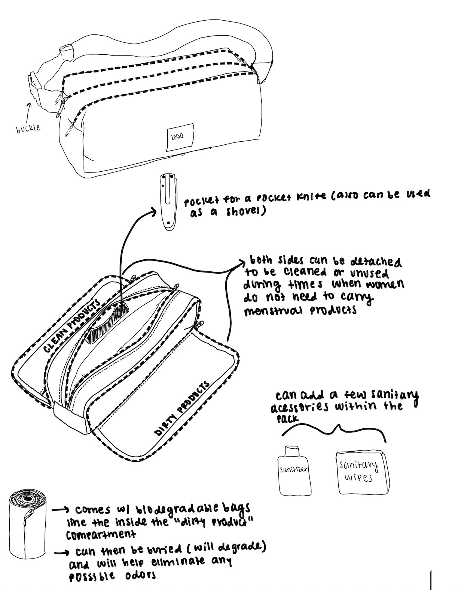
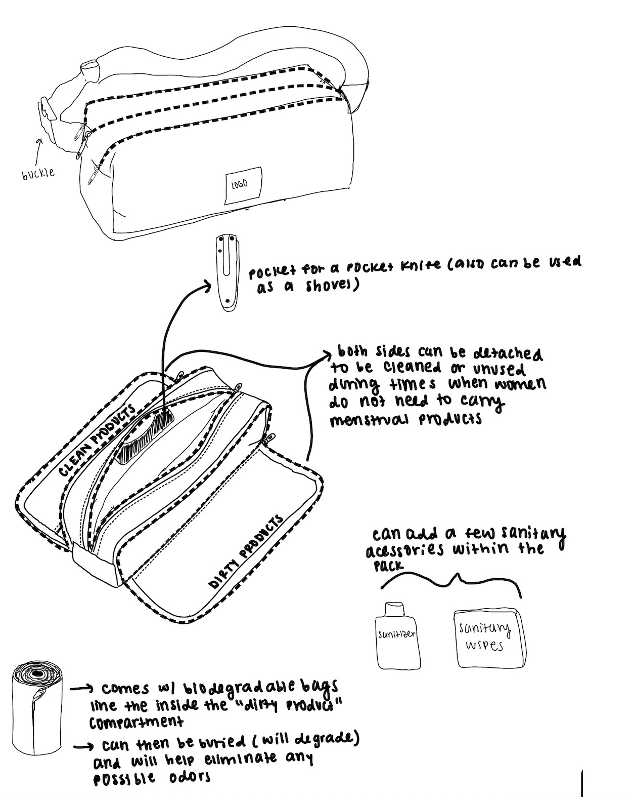
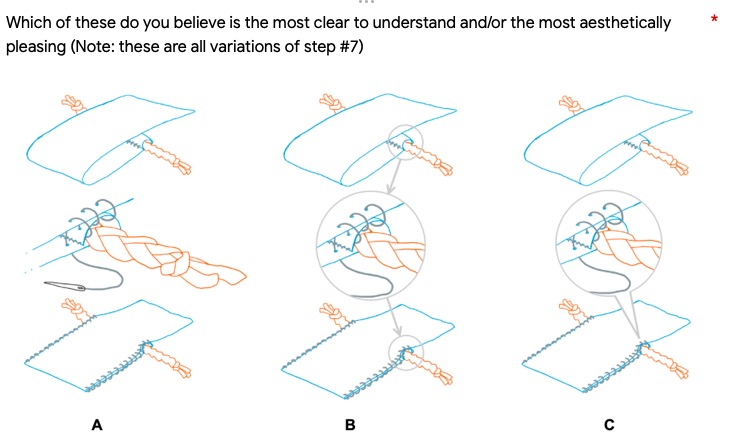
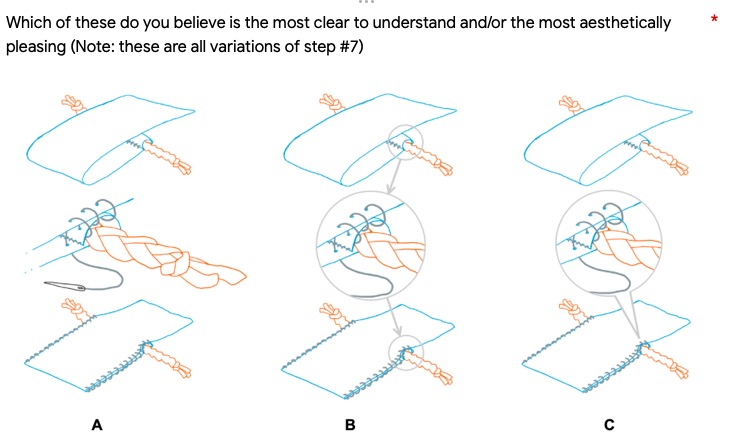

Project Kilimanjaro, a non-profit organization, is helping girls and women in Pune, India with menstrual health management. Together with PK, our team designed a menstrual care bag with an instruction manual. The bag can be easily hand-sewed and used to carry menstrual products safely and sanitarily.
Problem statement: Period being a taboo topic prevents girls and women in rural Pune, India from properly managing their menstrual health. But period is a normal and beautiful part of life, nothing to be ashamed of.
▶ Set direction, Weigh anchor
There are multiple root causes to our problem. We chose to go down the path of creating a menstrual bag, because Project Kilimanjaro already had some other projects tackling the other causes (such as biodegradable pad and education curriculum). We wanted to maximize the help that we did, so we chose a path that was different from, but could also supplement the existing projects.
More explanation more text here more text here more text here. More text here more text here more text here. More text here more text here more text here. More text here more text here more text here.
▶ Designs. Some title here
Maybe some text here for brief introduction some text here some text here. More text here more text here more text here.
PadPal bag
Brainstorming ideas from every member → three bag concepts: Gradient from the easiest to make to the most functional. Decision was settled based on feedback from our NGO.
 


Prototyping. More text here more text here more text here. More text here more text here more text here.

Instruction guide
Refined graphic of steps, so that minimal text was needed for the steps to be understood and followed.
Being culturally sensitive: From “pad bag” to the cute name of “PadPal”; Color choice communicated a sense of beautiful and confident; International unit for dimension.
Will put more iteration pictures:

 

▶ A dutiful recorder
We have regular meetings every other week with the development team, who work on implementing our design. This is very helpful both in terms of getting valuable feedback and practicing the skill of communicating our design decisions.
See my meeting notes here: [some link].
▶ Remote working and conflict handle
On our NGO side they had one contacter who was in charge of communicating with us. This channel with multiple layers led to miscommunication at some points. It was over half of the quarter, and we suddenly had to change our direction from designing an actual menstrual bag product, to providing a guide for users to hand-make it by themselves. As a result, the design of the bag also had to change from partially factory-producible, to the simplest for hand manufacturing. Although this shift was sudden, we managed to cope with it and ended up with an instruction guide that satisfied the needs of our NGO.
Will phrase this better:
We had a conflict among our team due to different opinions on the track to take. One member insisted on a direction that most teammates disagreed with but refused to listen to others, so argument burst out. The remote environment worsened the situation. I tried to ease the tension by explaining our common goal beyond the disagreement, and it temporarily worked. But sadly at last that member still impulsively left us. We healed this loss and picked up the work again. We knew we couldn’t be stopped by internal conflict, because bigger duty was waiting for us.
▶ Learning from the project
Brief future implementation. Takeaways. More text here more text here more text here. More text here more text here more text here. More text here more text here more text here.
See our report and presentation: [some link], [some link].
Thank you to my teammates [someone], [someone], [someone], [someone].
Thanks to PK for the opportunity: Project Kilimanjaro.